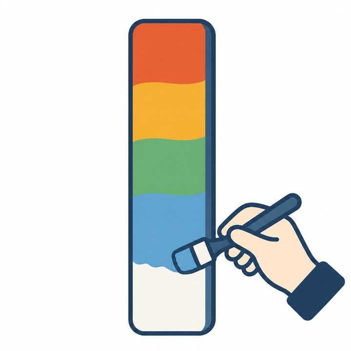

iPhone・iPad・Android の行動記録
1押しで始めて、
1日を色で塗る。
やったことの時間を、1日の24時間の帯に色で塗っていくアプリです。始めるときに札を1押し、やめるときにもう1押し。夜に今日の帯を見返すと、時間がどこへ行ったかが色で分かります。
App Store・Google Play で配信予定買い切りで全部の機能が使えます。月額・アプリ内課金・広告・アカウントはありません。

こんな困りごとのために
止め忘れて、記録がめちゃくちゃ
帯の空いたところを押すと、そのすき間にぴったりの記録をあとから足せます。止め忘れた記録は、押して終わりを直せます。
時刻を直すとキーボードが出る
時刻は −5分・−1分・＋1分・＋5分のボタンで動かします。キーボードは出ません。
記録が重なっていた
ほかの記録と重なる時刻にしようとすると、重なる相手（時刻とやること）を名指しして知らせ、保存しません。
グラフが課金だった
買い切りです。今日・7日・30日の合計の棒と表まで、全部使えます。
夜中をまたぐ睡眠
0時をまたいだ記録は、両方の日の帯に分けて塗り、合計も日ごとに分けます。
カレンダーにも残したい
カレンダーの形（.ics）で書き出せます。カレンダーの許可は使いません。CSV の書き出し・読みこみもできます。
できること
| 札で始める・止める | やることの札（色・形・名前）を押すと始まり、もう一度押すと止まる。別の札を押すと切りかわる（同時に2つは動かない） |
|---|---|
| 今日の帯 | 0:00〜24:00 の縦の帯に色で塗る。いまの時刻に線。前の日の帯も ‹ › とスワイプで |
| あとから直す | 帯のすき間を押して足す・記録を押して直す（やること・始まり・終わり）・ゴミ箱（30日） |
| 合計 | 今日・7日・30日。やることごとの棒と表（割合つき） |
| やること | 名前（20文字まで）・8色・12の形。足す・並べかえる・しまう |
| 残す | CSV の書き出しと読みこみ・カレンダーの形（.ics）の書き出し |
記録はどこにある？
記録は端末の中だけに置き、開発者には届きません。通信・通知・ウィジェットは入れていない、記録するだけのアプリです。